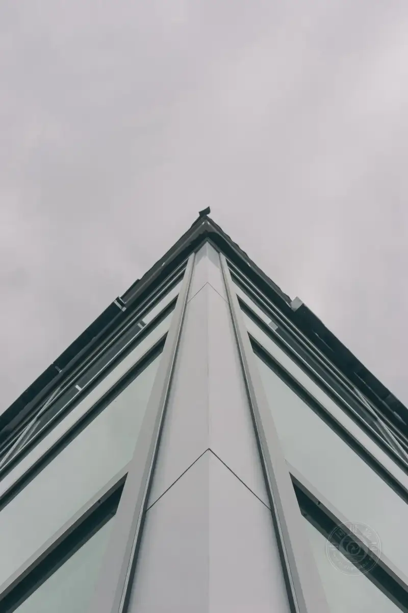

Published: 2023-07-14
Original link: https://www.cnphotos.net/academy/show-144.html
©Paul Carmona
Leading lines are one of the basic composition tools every photographer should learn. The idea itself is not complex, but using them well takes your own eye. In this article, I discuss leading lines, what they are, and how to use them to make good photos.
Leading lines do not have to be clear to draw the viewer to the subject. ©Majestic Lukas
What are leading lines?
A leading line uses lines in the image to guide the viewer eye through the frame to the main subject.
Often these lines start at the bottom of the frame and lead the eye upward, from foreground to background. A leading line can be anything line-like that pulls the eye in a direction.
The curve of the coast forms a natural leading line that guides the viewer through the photo. ©K. Mitch Hodge
Why are leading lines important?
One of the most important parts of photography is connecting with the viewer, and leading lines are one of the simplest ways.
Our eyes naturally follow lines in a frame, so using them in photography is a highly effective way to draw the viewer in.
Leading lines help guide the viewer through the composition you want. You can use them to draw attention to the important part of the image, the subject. They can also pull the eye away from areas you do not want noticed.
Leading lines create flow and energy through the whole composition, and they are a simple way to add depth to an image.
The winding road, together with the night sky above, forms several leading lines across the image. ©Thomas Bennie
Types of leading lines
• Vertical lines often express strength and stability. You see them often in architecture, where the goal is perfect verticals and parallel lines.

©Eugene Triguba
• Diagonal lines work especially well as leading lines, because the eye is drawn to them. Diagonals that cut across the frame at a sharp angle away from the edge are best. They suggest motion and help carry the eye from foreground to background.
©Clay Banks
• Converging lines are lines that are not parallel and slowly move together. They are a good way to draw the viewer to the focal point of the photo.
©Alistair MacRobert
• Curves, such as the broad curve of a coastline, work well in landscape, and they give the image a softer feel.
Curved leading lines can work from front to back and back to front in one image, creating strong composition. ©Andy Holmes
• Implied lines are formed by people, animals, or even the gaze of something pointed toward the main subject.
©Jonny Clow
Find leading lines
You can find leading lines almost anywhere. The key is knowing where to look.
When we talk about lines, we do not mean only the obvious ones, such as a straight road. I mention paths because they are a good place to start. A road, by its nature, always leads somewhere.
©Joshua Earle
You can look for man-made lines, such as roads, bridges, fences, rows of lamp posts, and bollards. You can also look in nature. Clouds, sunbeams, flowers, trees, rocks, coastlines and waves, hills, and cliffs can all act as leading lines.
When you set up your camera, look around and see which leading lines you can bring into the frame. And remember, not all leading lines have to be straight.
©Corina Ardeleanu
Use leading lines to strengthen composition
As noted above, roads are a great choice for beginners using leading lines. A road always leads somewhere, so it can carry the viewer from the foreground to the background of the photo.
Roads make excellent leading lines. They run inward to a vanishing point, and they pair easily with the rule of thirds to make a balanced frame.
Leading lines do not only run front to back. Diagonals can also create a strong point that draws attention to your subject. Since people usually read images from left to right, place a strong subject on the right, and let the diagonals converge on it. But avoid straight horizontal lines across the frame. They cut the image in half and lead the viewer nowhere.
©Andrej Lišakov
Leading lines can strengthen your composition. Here are some ideas to try:
• Place a strong line from foreground to background to create depth and perspective.
• Use a curve to take the viewer on a journey around the image.
• Place the subject where the leading lines converge, to draw the eye to it.
• Make sure your leading lines always lead to something, even if it is just a point far away. Do not let a line stop dead in the frame, as that only confuses the viewer.
• Lines made by repeated structure, such as a row of lamp posts or a series of arches, create strong images, because they add a great sense of depth.
• Do not forget that even people have lines in their bodies and faces. They are not exactly leading lines, but you can use angles when shooting a person to make clearer photos.
©Patrick Fischer
More tips for using leading lines
• Use a wide-angle lens. A wide-angle lens captures a larger area and a broader scene, so it is easier to place leading lines in the frame. This deepens the composition and gives the lines more room to flow.
• Try several leading lines. If you can find several lines that all lead to the main subject, you get a very strong composition. But if the lines drift away from the subject, they confuse the viewer and may pull them the wrong way. So use several lines only when they go the same way.
• Change your angle. Changing your viewpoint can affect your leading lines a lot. Lower the angle at which the line enters the frame to make it more diagonal and more dramatic.